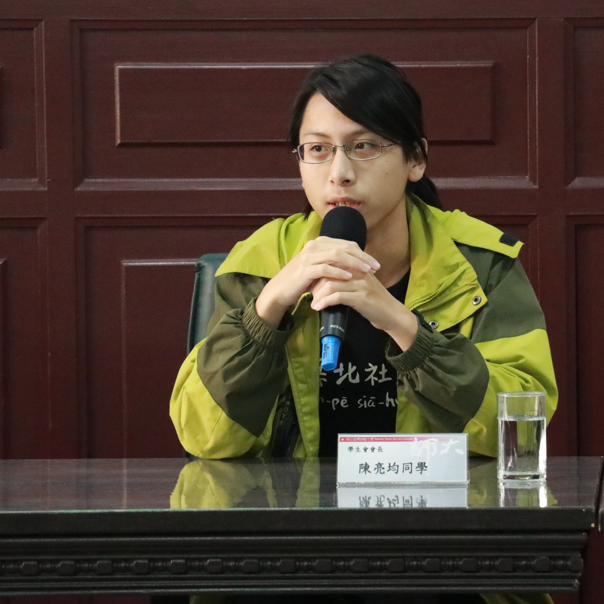

|
陳亮均 TÂN, Liāng-kun｜活動紀錄 |  |
 |
 |
學生議會議長任內與臺大學生會、臺科大學生會合辦「打開台大 Open House NTUs」，原規劃多場參觀或導覽活動，但因疫情中止，此為開幕剪綵（？）照片。
時隔二年再帶一次四六事件小旅行，路線經過改良。左圖位於臺大，右圖位於臺師大。
學生會長任內，每學期例行一次學校一級主管與全校學生（自由報名）座談會，供學生反映意見，此慣例約於2018年開始。左圖為108-1學期，右圖為108-2學期。
2019年大一時接下小旅行組長，規劃三條小旅行路線，分別為「再行。四六事件訪思」、「夜行。師大及台大｜走訪現代空間白色恐怖史」、「難行。六張犁｜遇識政治受難者」。下圖為「再行」行經臺師大校內。
© 陳亮均 TÂN, Liāng-kun｜Email: TanLiangkun2000@gmail.com